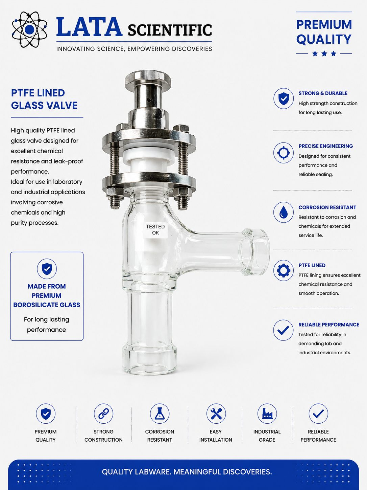
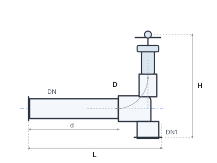
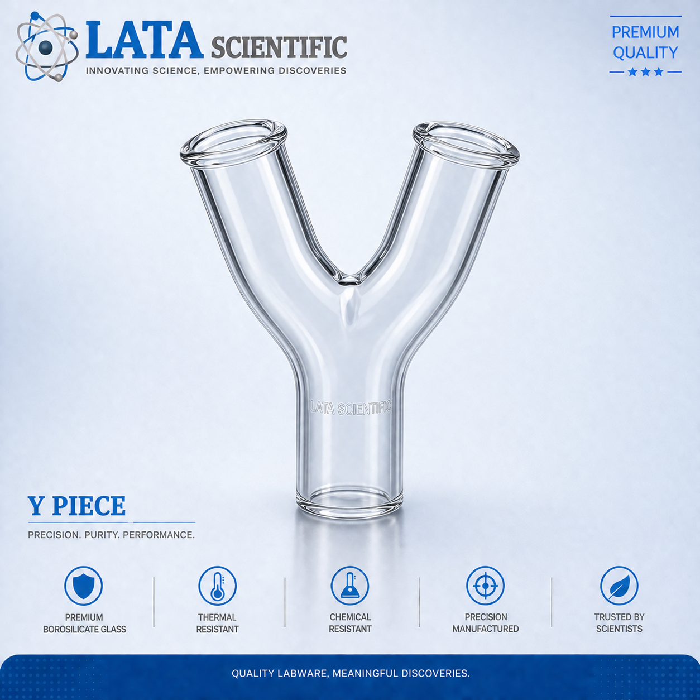
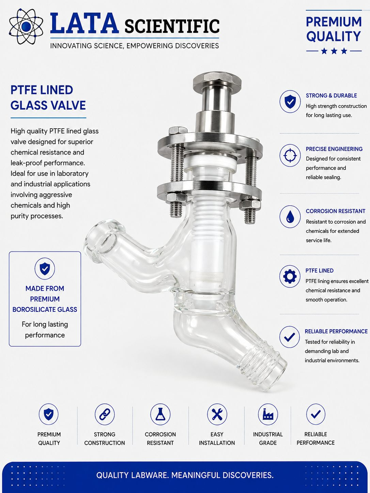

Glass Valves

Glass angle valve, DN 15 to DN 50, 90° and 80°
Borosilicate glass angle valve combining a direction change and isolation in one body — DN 15 to DN 50, in 90° and 80° builds.
| Product type | Glass angle valve |
|---|---|
| Material | Borosilicate 3.3 |
| Spindle | PTFE |
| Nominal bore range | DN 15 to DN 50 |
| End connection | Beaded glass ends with backing flanges and PTFE-envelope gaskets |
| Flange drilling | See the drilling table — BS 10 Table E, BS 10 Table F and ASA drilling available |
| Pressure rating | Not published on the valve catalogue page — confirm with us for your duty |
| Temperature rating | Not published on the valve catalogue page — confirm with us for your duty |
Product overview
An angle valve turns the line and shuts it off in a single component, which removes a bend, a joint and a length of pipe from the layout. On a glass line that matters twice over: fewer joints means fewer potential leak paths and less glass to support.
Read the D column carefully — on this table it is an angle in degrees, not a diameter. DN 15 and DN 25 are each listed twice, once at 90° and once at 80°, with identical dimensions otherwise. The 80° build is what gives a horizontal run a slight fall so it drains, exactly as the 80° bends in the pipeline range do.
Face-to-face is short for the bore — 50 mm at DN 15 and 150 mm at DN 50 — so the valve fits where a separate bend plus valve would not.
Features
Benefits
Applications & industries
Technical data
Figures below are for this product only — every item in the range carries its own dimension table.
| Product type | Glass angle valve |
|---|---|
| Material | Borosilicate 3.3 |
| Spindle | PTFE |
| Nominal bore range | DN 15 to DN 50 |
| End connection | Beaded glass ends with backing flanges and PTFE-envelope gaskets |
| Flange drilling | See the drilling table — BS 10 Table E, BS 10 Table F and ASA drilling available |
| Pressure rating | Not published on the valve catalogue page — confirm with us for your duty |
| Temperature rating | Not published on the valve catalogue page — confirm with us for your duty |
| Catalogue reference | LSPVE series, e.g. LSPVE1.5 = DN 40 |
| Face to face | 50 mm to 150 mm |
| Angle (D) | 90° standard; 80° at DN 15 and DN 25 |

| Cat. Ref. | DN | DN1 | d | L | H | D |
|---|---|---|---|---|---|---|
| LSPVE07 | 15 | 15 | 12 | 50 | 80 | 90° |
| LSPVE07 | 15 | 15 | 12 | 50 | 80 | 80° |
| LSPVE1 | 25 | 25 | 18 | 100 | 175 | 90° |
| LSPVE1 | 25 | 25 | 18 | 100 | 175 | 80° |
| LSPVE1.5 | 40 | 40 | 26 | 150 | 200 | 90° |
| LSPVE2 | 50 | 50 | 38 | 150 | 200 | 90° |
All dimensions in mm, transcribed exactly from the catalogue page. On this table D is the included angle in degrees, not a diameter. LSPVE07 and LSPVE1 are each listed twice — the same reference and dimensions in a 90° and an 80° build — and both rows are reproduced exactly as printed. Quote the angle with the reference when ordering.
FAQ
Because the catalogue prints it twice — once at 90° and once at 80°, with identical DN, d, L and H. The reference alone does not distinguish them, so state the angle you need on the order.
No. On this table D is the included angle in degrees. The diameter columns here are DN, DN1 and d.
The same purpose as the 80° bends in the pipeline range: it puts a slight fall into a horizontal run so it drains.
Related products



Enquiry
Send the bore, the media, the temperature and pressure, and the flange standard you work to. Drawings and custom sizes welcome.
Send your requirement — media, temperature, pressure, dimensions — and we'll recommend the right product or fabricate it.
Talk to an engineer